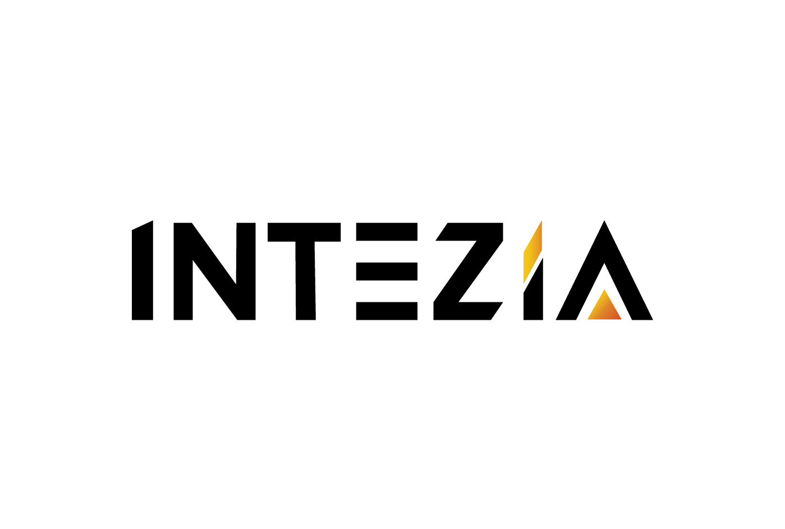

Propuesta de proyecto · Servicio de Habilidades
Agentes de IA para atender,
promover, reclutar y asesorar
en Aqua Vista
Este proyecto levanta cómo opera Aqua Vista y construye con su equipo los agentes de atención por WhatsApp, mercadeo, reclutamiento y consejo, hasta dejarlos en uso.
Fuente: Ficha de Levantamiento de Aqua Vista (15/10/2026) y reunión con la dirección.
02 · Alcance
Cuatro proyectos con sus agentes en uso.
Levantamos 4 áreas y construimos los agentes: asistentes de IA que responden, analizan y filtran.
- Atención al clienteAtender por WhatsApp con tono humano y pasar a un vendedor a quien ya quiere reservar
- Mercadeo y redes socialesResponder en Instagram, analizar el mercado y crear contenido, sin una persona dedicada
- Recursos HumanosFiltrar los currículos que llegan y devolver los 3 mejores perfiles para entrevistar
- Consejo EjecutivoUn consejo de tres consejeros y un presidente con perfiles definidos por el dueño
Fuera de este alcance
- La plataforma de reservas de Aqua Vista: está en desarrollo, así que esta fase no depende de ella ni se conecta a ella.
- Conexiones con WhatsApp Business e Instagram: se confirman en el levantamiento de cada agente, sin compromiso previo.
- Control de egresos, dashboard y el consejo en vivo: van en otra etapa, según el resultado.
- Licencias y consumo de IA: van aparte de la inversión de cada proyecto, con su valor de lista en las notas de cada hoja.

Aqua Vista · CAI-05503 · Ruta
Del levantamiento a los agentes en uso.
El calendario se acuerda en la reunión de arranque. El levantamiento delimita cada agente.
4 áreas, 2 h cada una: delimitar cada agente antes de construirlo.
Los agentes de atención, mercadeo y reclutamiento, y el consejo, en uso.
- 30 díasUso de los agentes
- 60 díasAjustes y nuevas construcciones
- 90 díasTiempo recuperado y consumo medidos
Reunión de 1 h para acordar el calendario y quién coordina el proyecto por Aqua Vista.
4 áreas, 2 h cada una: cómo funciona hoy cada proceso y qué hará cada agente.
Atención por WhatsApp, mercadeo, reclutamiento y el consejo, construidos con el equipo.
Seguimiento: uso de los agentes, nuevas construcciones y tiempo recuperado.
Las 40 h de trabajo son una proyección: 8 h de levantamiento de los agentes y 32 h de construcción. La reunión de arranque va aparte y tampoco suma.
Siguiente paso · Innovación Control de egresos, dashboard, conexión de los agentes con la plataforma de reservas y el consejo en vivo.
04 · Cómo trabajamos
Así construimos cada agente.
Primero se levanta cada proceso y después se construye con el equipo, que aprende a mantenerlo.
- LevantamosCada proceso y lo que su agente debe hacer, con quien lo vive.
- ConstruimosCon el equipo, cada agente, hasta dejarlo en uso.
- AdoptamosEl equipo opera, ajusta y mantiene los agentes por su cuenta.
- MedimosEl tiempo recuperado y el consumo, a 30, 60 y 90 días.
Por qué en este orden Primero se levanta cada proceso para delimitar su agente; después se construye con el equipo, que aprende a ajustarlo y a mantenerlo sin depender de un proveedor externo.
Quién construye Intezia construye junto a las dos personas del equipo, sobre los casos reales de las posadas, sin entregar un producto empaquetado.
Cómo funciona en la práctica
- Una persona en el circuito. Los agentes filtran y responden, y pasan a una persona cuando hace falta: un vendedor cierra cada reserva.
- Gasto bajo control. El equipo aprende a elegir el modelo y a medir el consumo de tokens, la unidad con que se factura la IA.
- Solo si conviene. En Instagram, el agente propio se construye solo si cuesta menos que la herramienta que ya pagan.
Cómo cuidamos sus datos
Los datos de los huéspedes no se cargan a ninguna herramienta de IA sin la autorización de Aqua Vista; los criterios de uso seguro se acuerdan al empezar.
05 · Entregables
Lo que recibe Aqua Vista.
Lo que se llevan: un levantamiento por proyecto y los agentes, más el seguimiento a 30, 60 y 90 días.
Atención al cliente
- Levantamiento de Atención al cliente
- Las preguntas frecuentes y el tono de atención
- Cuándo una persona pasa a un vendedor
- Agente de atención por WhatsApp con traspaso a vendedor
- Responde preguntas frecuentes con tono cercano
- Filtra y detecta quién ya quiere reservar
- Pasa la conversación a un vendedor
Mercadeo y redes sociales
- Levantamiento de Mercadeo y redes sociales
- Qué hace hoy la herramienta que ya pagan
- Cuáles de los tres agentes conviene construir
- Agente de Instagram: comentarios y mensajes
- Responde comentarios y mensajes
- Redirige a los enlaces pertinentes
- Analista de mercado: tarifas, temporadas y feriados
- Parte de la información que ya tienen levantada
- Da recomendaciones y envía notificaciones
- Creación de contenido: imágenes y videos
- Parte de la información de las posadas
- Crea piezas de imagen y de video para redes
Recursos Humanos
- Levantamiento de Recursos Humanos
- Cómo se filtran hoy los currículos
- Qué pide el equipo de cada perfil
- Agente de currículos: los 3 mejores perfiles
- Filtra y cualifica según la instrucción del equipo
- Devuelve los 3 mejores perfiles para entrevistar
Consejo Ejecutivo
- Levantamiento del Consejo Ejecutivo
- Los perfiles estratégicos de cada consejero
- Qué decisiones se llevan al consejo
- Consejo Ejecutivo: tres consejeros y un presidente
- Tres consejeros y un presidente con sus perfiles
- Se trabaja por escrito, con Claude Code
06 · Retorno
Retorno esperado: tiempo recuperado, medido.
El retorno se mide contra la línea base que cada área entrega en su levantamiento.
Cómo se calcula el retorno de cada agente
- VolumenCuántos mensajes, comentarios, currículos y análisis se repiten cada mes.
- Tiempo actualLo que toma hoy cada proceso: es la línea base.
- Tiempo con el agenteLo que toma el mismo trabajo una vez que el agente está en uso.
- Horas recuperadasVolumen por la diferencia de tiempos: una estimación referencial, sin compromiso de resultado.
- Gasto de operarLicencias y consumo de cada agente, contra la herramienta o el trabajo que hoy resuelve ese proceso.
Calendario de garantía y cálculo del retorno
Desde el cierre de cada área: agentes en uso real y línea base validada con el equipo.
Horas recuperadas y consumo medidos contra la línea base, por agente.
Medición del retorno: horas recuperadas contra el gasto de operar los agentes.
Hacia dónde va el proyecto
Si el tiempo se libera, Aqua Vista puede seguir creciendo sin sumar personal en cada posada.
El equipo construye y ajusta sus agentes sin depender de un proveedor externo.
Con el retorno medido, Aqua Vista decide qué otros procesos lleva al mismo ciclo.
A los 90 días del cierre de cada área, Aqua Vista contará con el tiempo recuperado medido y el gasto de operar sus agentes.
Atención al cliente.
Propuesta Económica · Proyecto 1 · Atención al cliente
Atención por WhatsApp con traspaso a vendedor: 10 horas de trabajo.
Cotización válida por 30 días.
Este servicio se presta bajo nuestros términos y condiciones. Al avanzar con esta propuesta, ambas partes los aceptan.
Estamos contigo hasta que el agente de atención quede en uso.
Mercadeo y redes sociales.
Propuesta Económica · Proyecto 2 · Mercadeo y redes sociales
Instagram, analista de mercado y contenido: 12 horas de trabajo.
Cotización válida por 30 días.
Este servicio se presta bajo nuestros términos y condiciones. Al avanzar con esta propuesta, ambas partes los aceptan.
Estamos contigo hasta que cada agente de mercadeo quede en uso.
Recursos Humanos.
Propuesta Económica · Proyecto 3 · Recursos Humanos
Filtro de currículos con los 3 mejores perfiles: 8 horas de trabajo.
Cotización válida por 30 días.
Este servicio se presta bajo nuestros términos y condiciones. Al avanzar con esta propuesta, ambas partes los aceptan.
Estamos contigo hasta que el filtro de currículos quede en uso.
Consejo Ejecutivo.
Propuesta Económica · Proyecto 4 · Consejo Ejecutivo
El consejo que asesora al dueño en sus decisiones: 10 horas de trabajo.
Cotización válida por 30 días.
Este servicio se presta bajo nuestros términos y condiciones. Al avanzar con esta propuesta, ambas partes los aceptan.
Estamos contigo hasta que el consejo quede en uso.
11 · Próximos pasos
Tres pasos para arrancar.
Esto es lo que sigue cuando Aqua Vista confirme la propuesta.
Confirmamos con Aqua Vista la fecha de arranque y quién coordina el proyecto desde su equipo.
El equipo comparte los accesos que autorice y ejemplos reales de cada proceso, sin datos de huéspedes.
Una hora para acordar el calendario de las 4 áreas, el orden del trabajo y los accesos.
+58 414 5756615